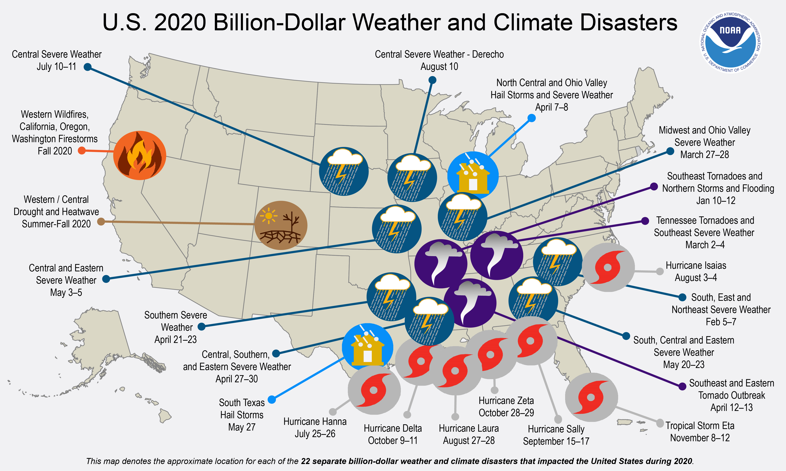
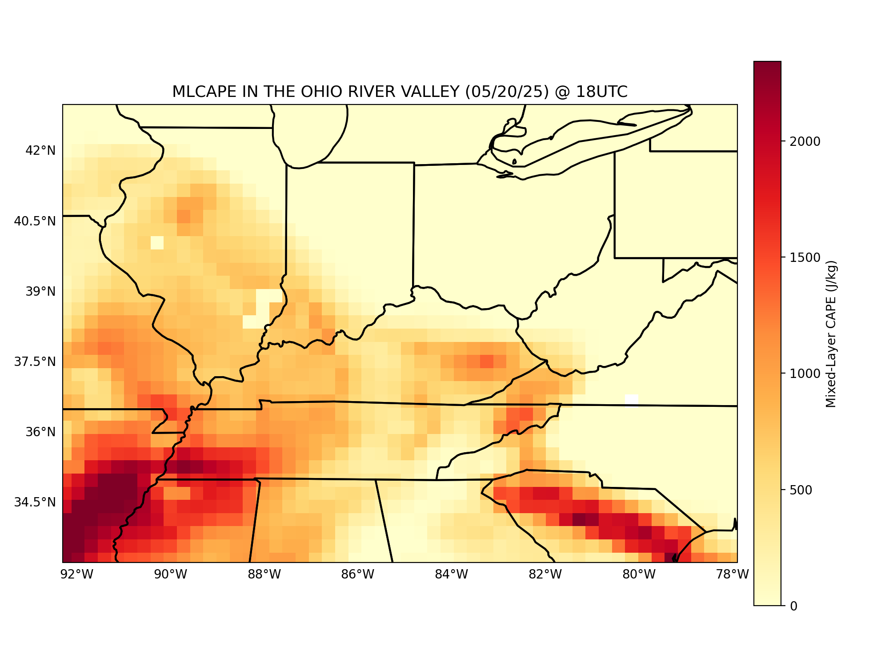
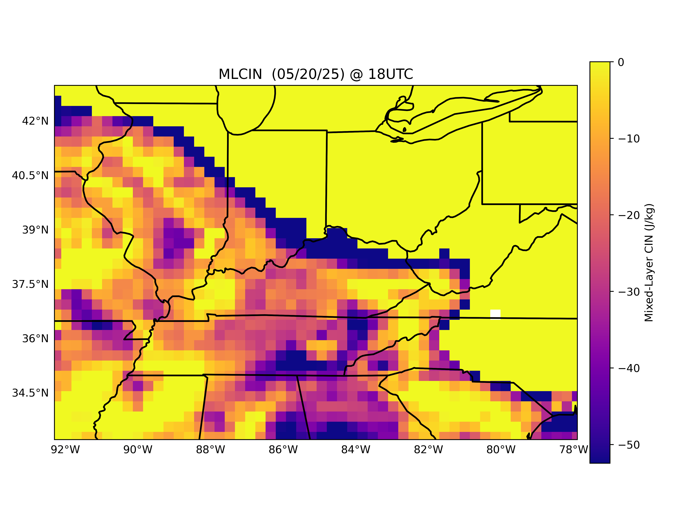
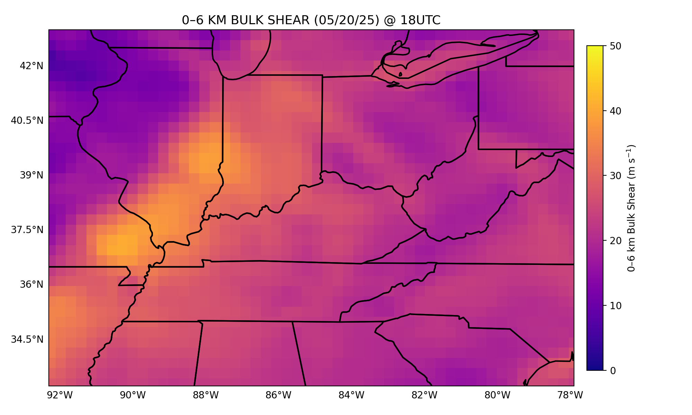

Abstract
Severe convective storms — tornadoes, damaging winds, and large hail — pose a major weather hazard across the Ohio River Basin (ORB). Yet the long-term evolution of environments conducive to severe convection in the region remains insufficiently documented. This study examines the climatology, spatial distribution, and temporal variability of severe-storm environments using ERA5 reanalysis (1996–2025), then extends to CMIP6 future projections under SSP5-8.5 through 2100. Over 80 thermodynamic, kinematic, and moisture parameters are derived at 6-hour intervals — including CAPE, CIN, SRH, wind shear, STP, EHI, and SCP. Random Forest ML models trained on NOAA Storm Events data estimate probabilistic hazard occurrence for tornadoes, hail, and damaging winds. Dynamically downscaled CMIP6 at 4-km resolution resolves the mesoscale processes critical for severe convection.
1. Motivation & Context

Billion-dollar weather and climate disaster events across the United States (2020). The Ohio River Basin and surrounding Midwest consistently appear as hotspots, motivating long-term climatological analysis of severe-storm environments.
The Ohio River Basin experiences some of the nation's highest severe-weather frequency, yet comprehensive regional climatologies of the atmospheric environments that produce these storms — rather than storm counts alone — remain limited. Understanding how CAPE, wind shear, helicity, and composite parameters like STP have evolved over the past 30 years, and how they may shift under high-emission scenarios, is critical for climate-resilient planning.
2. Parameters & Diagnostics
A comprehensive suite of 80+ parameters is derived at 6-hour intervals from ERA5:

Mixed-Layer CAPE (MLCAPE) — Ohio River Basin. Convective available potential energy provides the fuel for deep convection. Higher CAPE values indicate greater thermodynamic instability and severe-storm potential.

Mixed-Layer CIN (MLCIN) — Ohio River Basin. Convective inhibition acts as a "lid" suppressing storms until it is overcome. The interplay between CAPE and CIN determines when and where convection initiates.

0–6 km Bulk Wind Shear — Ohio River Basin. Deep-layer shear organizes convection into supercells capable of producing long-track tornadoes and large hail. This kinematic parameter is a key discriminator of hazard type.

Significant Tornado Parameter (STP) — Ohio River Basin. The STP combines CAPE, shear, CIN, and LCL height into a single composite index that discriminates environments favorable for significant tornadoes (EF2+).
| Category | Key Parameters |
|---|---|
| Thermodynamic Instability | MLCAPE, SBCAPE, MUCAPE, MLCIN, LCL Height, Lapse Rates |
| Kinematic / Shear | 0–1 km, 0–3 km, 0–6 km bulk shear vectors, SRH (1 km, 3 km) |
| Moisture | Precipitable water, mixing ratio, dewpoint depression |
| Composite Indices | STP, EHI, SCP (Supercell Composite), SHIP |
| Storm Reports (labels) | NOAA Storm Events: tornado, hail ≥ 1 in, wind ≥ 58 mph |
3. Three-Phase Methodology
ERA5 reanalysis provides the "atmospheric truth." NOAA Storm Events provides "ground truth" storm reports mapped to a 40-km spatial neighborhood. A Random Forest classifier is trained on 1996–2020 data to learn the physical "recipe" for severe-storm environments, then validated on the independent 2021–2025 period. Over 80 derived parameters feed the model, producing calibrated probabilities for tornado, hail, and damaging-wind hazards.
The overlap period (2014–2025) where both ERA5 and CMIP6 data exist is used to characterize biases and statistical relationships between the two datasets. Dynamical downscaling of CMIP6 to 4-km resolution resolves mesoscale processes — low-level jets, boundary interactions, localized shear maxima — that coarse ~100-250 km CMIP6 grids cannot capture. Isotonic regression calibrates model probabilities for reliability.
The validated Random Forest is applied to bias-corrected, downscaled CMIP6 projections (SSP2-4.5 and SSP5-8.5) to produce a 75-year outlook of severe-storm environment frequency, intensity, and seasonality across the Ohio River Basin. Key questions: Will severe-storm days increase by 2100© Will the season shift earlier into winter/spring© Will tornado-favorable environments expand northward©
4. Preliminary Validation

Preliminary validation results comparing ERA5-derived storm-environment parameters to NOAA Storm Events observations over the Ohio River Basin. Agreement between modeled and observed severe-weather environments confirms the diagnostic framework.
5. Research Questions
- How have severe-storm environments across the ORB changed over 1996–2025©
- What spatial patterns and seasonal cycles characterize tornado-, hail-, and wind-favorable conditions©
- How well does CMIP6 represent the ERA5-observed environments, and what biases exist©
- Under SSP5-8.5, how will the frequency, intensity, and seasonality of severe-storm environments evolve through 2100©
- Can Random Forest ML reliably discriminate hazardous from non-hazardous environments across both ERA5 and CMIP6 data©
6. Significance
This study is among the first to apply a combined ERA5 + ML + downscaled CMIP6 framework to severe-storm environment climatology for the Ohio River Basin. The results will:
- Provide the most comprehensive 30-year climatology of severe-storm environments in the ORB
- Offer actionable projections for emergency management and infrastructure planning
- Contribute to understanding of how climate change reshapes the "tornado belt" geography
- Serve as a methodological template for other at-risk regions globally